China Employee Termination 2026: Pulse Failure-Modes Brief for Foreign Employers
Key takeaways
- Most China termination losses come from predictable failure modes, not from unknown law.
- Foreign employers should map each case against high-frequency failure points before employee communication.
- The top failure modes are route mismatch, evidence contradiction, script drift, and payroll/tax misalignment.
- City-level interpretation uncertainty should be treated as an explicit failure mode, not background context.
- This brief leads with practical controls; legal depth is included in a secondary appendix.
What changed and why this matters now
As organizations compress timelines, the same errors repeat: legal route is selected too quickly, evidence is assembled too late, and payroll closure is handled after the meeting. These are not isolated mistakes—they are recurring failure modes that can be forecast and prevented. For global teams managing China cases remotely, a failure-mode lens improves decision quality because it asks one operational question: “What is most likely to break next, and how do we block it now?”
This run uses a failure-modes format (different from watchlist, myth/fact, matrix, switchboard, decision tree, checklist-ledger, scorecard, and risk register) to prioritize prevention over post-dispute cleanup.
Plain-language legal context first
China employer-side termination generally requires a lawful basis, coherent factual support, and consistent process execution. Public legal anchors include the PRC Labor Contract Law framework, implementing regulation references (including Decree No. 535 context), and Supreme People’s Court labor-dispute interpretation materials. For foreign readers, the practical meaning is clear: even when business rationale is valid, a weak execution chain can still produce high dispute exposure.
Failure-mode analysis translates legal expectations into practical preventive controls by identifying where the process typically breaks.
Pulse failure-mode map (impact-first)
Failure Mode 1: Route-Fact Mismatch
What breaks: selected route does not fit the actual fact pattern or local practical interpretation.
Early warnings: route memo uses generic language, no fallback route, city memo missing.
Operational impact: case vulnerability appears early in challenge or negotiation.
Prevention controls: route review gate, city validation requirement, documented fallback strategy.
Failure Mode 2: Evidence Chronology Fracture
What breaks: records are incomplete or contradictory across manager, HR, and legal files.
Early warnings: undocumented timeline gaps, late file edits, inconsistent source ownership.
Operational impact: reduced credibility and weaker dispute posture.
Prevention controls: single chronology ledger, source-tag requirement, contradiction review before route lock.
Failure Mode 3: Communication Script Drift
What breaks: manager statements diverge from approved legal/HR narrative.
Early warnings: unbriefed speakers, ad hoc script changes, missing meeting control protocol.
Operational impact: employer-created contradiction evidence.
Prevention controls: approved script modules, spokesperson assignment, live note and escalation protocol.
Failure Mode 4: Payroll/Tax Closure Disconnect
What breaks: payout and tax/social handling are not fully aligned before communication.
Early warnings: unresolved payroll worksheet, unclear payment date, IIT treatment ambiguity.
Operational impact: secondary disputes, correction incidents, trust erosion.
Prevention controls: pre-communication payroll sign-off, payment-proof readiness checklist, correction workflow triggers.
Failure Mode 5: Local Interpretation Blind Spot
What breaks: team assumes national text resolves all practical questions.
Early warnings: no city-level memo, conflicting advisor interpretations, delayed local review.
Operational impact: route confidence overestimated; late-stage reversals.
Prevention controls: mandatory local interpretation note, unresolved-point log, owner deadline for closure.
Failure Mode 6: Archive Retrieval Failure
What breaks: records exist but cannot be quickly assembled into coherent response package.
Early warnings: fragmented storage, no index, weak linkage between actions and documents.
Operational impact: slower and weaker response when challenged.
Prevention controls: indexed closure packet, case ID mapping, retention QA before case close.
Why this works for foreign employers
Foreign leadership usually asks for certainty under time pressure. A failure-mode view gives practical certainty: it does not claim zero risk, but it identifies the highest-probability breakpoints and ties each to preventive controls and owners. This improves governance speed without minimizing legal complexity.
Practical scenarios
Scenario 1: Fast restructuring cycle with mixed case types
HR applies one process sequence across performance and restructuring exits. Route mismatch and chronology fractures appear in several files.
Failure-mode response: classify each case by likely failure mode first, then assign tailored controls instead of one universal script.
Scenario 2: “Ready to communicate” claim without payroll lock
All legal approvals are complete, but payroll calculations remain under revision.
Failure-mode response: trigger Failure Mode 4 block; communication date cannot proceed until closure readiness is verified.
Scenario 3: Strong documents, weak local calibration
Case file appears complete at national-policy level, but city practice issue remains unresolved.
Failure-mode response: elevate Failure Mode 5 to critical; hold until local interpretation is documented.
Role-owned SOP (failure-mode prevention)
Step 1 — Failure-mode pre-assessment
Owners: HRBP + Legal + local reviewer
- Score each failure mode low/medium/high.
- Identify top two likely breakpoints.
- Assign preventive owners and deadlines.
Step 2 — Control implementation
Owners: HR Ops + Manager + Payroll + Compliance
- Execute controls linked to high-risk failure modes.
- Record evidence IDs and completion timestamps.
- Escalate unresolved high-risk items.
Step 3 — Pre-communication gate
Owners: HR lead + Legal + Payroll lead
- Confirm no high-risk mode without mitigation.
- Validate route/evidence/payroll controls as complete.
- Sign no-go/go memo with rationale.
Step 4 — Execution monitoring
Owners: HR lead + meeting controls support
- Run script-control protocol and incident capture.
- Track any deviation against mapped failure modes.
Step 5 — Closure and lessons
Owners: Compliance + records owner
- Finalize closure package and retrieval index.
- Record which failure modes appeared and why.
- Update prevention controls for next cycle.
Required document checklist
- Employee profile and contract context
- Route rationale memo + fallback path
- City-level interpretation memo
- Chronology ledger and source map
- Script package and speaker approvals
- Payroll/severance/IIT handling worksheet
- Settlement records and acknowledgments
- Payment proof documents
- Failure-mode assessment log
- Closure memo and archive index
Exception handling playbook
Exception A: New evidence appears after pre-communication approval
- Action: reopen Failure Mode 2 review; pause communication until contradictions are resolved.
Exception B: Manager bypasses script briefing
- Action: escalate Failure Mode 3 immediately; designate alternate spokesperson.
Exception C: Local advisor views diverge materially
- Action: treat as Failure Mode 5 critical; document options and decision owner.
Exception D: Payroll correction required after meeting
- Action: launch Failure Mode 4 incident workflow with same-day remediation record.
Exception E: Repeated recurrence of same failure mode
- Action: run systemic fix (template change, training, workflow lock) rather than case-only patch.
System implementation notes
- Add structured fields for failure-mode scoring and mitigation status.
- Require evidence links for “mitigated” status changes.
- Automate hold triggers for unresolved high-risk modes.
- Build dashboard: recurrence by failure mode, time to mitigation, dispute correlation.
- Review quarterly to recalibrate prevention priorities.
Common mistakes and prevention
- Mistake: treating failures as one-off incidents.
Prevention: maintain recurring failure-mode taxonomy.
- Mistake: legal-only risk framing without payroll integration.
Prevention: include closure mode as core failure category.
- Mistake: no local interpretation discipline.
Prevention: mandatory city memo and unresolved-point tracker.
- Mistake: communication before mitigation completion.
Prevention: automated no-go gates.
- Mistake: no post-case learning capture.
Prevention: closure review tied to mode recurrence data.
What to do now
- Adopt a six-mode failure map across all active China termination cases.
- Require pre-assessment before route lock and communication planning.
- Link each high-risk mode to owner, deadline, and mitigation proof.
- Enforce payroll/tax closure as a non-negotiable control mode.
- Build monthly recurrence reporting by failure mode.
- Run focused manager training on communication and evidence failure modes.
- Convert repeated failures into workflow automation locks.
What to watch next
- Local interpretation divergence may continue under changing case mixes.
- High-volume cycles increase probability of script drift and late payroll corrections.
- Practitioner guidance can evolve practical expectations for evidence sufficiency.
FAQ
1) Why focus on failure modes instead of only legal checklists?
Failure modes predict where execution breaks, enabling earlier prevention.
2) Can one unresolved failure mode block a case?
Yes. High-risk unresolved modes should trigger no-go until mitigated.
3) Which mode causes the most avoidable losses?
Route-fact mismatch and payroll closure disconnect are frequent high-impact triggers.
4) How often should failure-mode scoring be updated?
At every major case milestone and whenever new evidence appears.
5) Is local interpretation really a separate mode?
Yes. In practice it can determine route defensibility despite national-level confidence.
6) Who should own final go/no-go?
Cross-functional leads (HR, legal, payroll) with explicit accountability.
7) How does this improve over time?
Track recurrence and mitigation speed, then strengthen controls where failures repeat.
Legal depth appendix (secondary)
This brief is grounded in official/legal and practitioner sources relevant to China employer-side termination operations. Core anchors include the PRC Labor Contract Law framework, implementing regulation references associated with Decree No. 535 context, and Supreme People’s Court labor-dispute interpretation materials. Practitioner and payroll-context sources inform operational translation for foreign employers. Residual uncertainty remains city-specific and fact-specific, so live decisions should include localized professional review.
Disclaimer
This content is informational only and does not constitute legal, tax, or employment advice.
Sources
- National People’s Congress (Labor Contract Law, English text), accessed 2026-03-05: http://www.npc.gov.cn/zgrdw/englishnpc/Law/2007-12/13/content_1384064.htm
- State Council Gazette reference (implementing regulation / Decree No. 535 context), accessed 2026-03-05: https://www.gov.cn/gongbao/content/2008/content_1124615.htm
- Supreme People’s Court labor dispute interpretation update page, accessed 2026-03-05: https://www.court.gov.cn/fabu/xiangqing/243981.html
- China Briefing, Employee Termination in China, accessed 2026-03-05: https://www.china-briefing.com/news/employee-termination-in-china/
- ICLG Employment & Labour Laws and Regulations: China, accessed 2026-03-05: https://iclg.com/practice-areas/employment-and-labour-laws-and-regulations/china
- Littler ASAP analysis on China employment law developments, accessed 2026-03-05: https://www.littler.com/news-analysis/asap/key-recent-developments-chinas-employment-law-china-us-comparative-perspective
- PwC PRC Individual Income Tax summary, accessed 2026-03-05: https://taxsummaries.pwc.com/peoples-republic-of-china/individual/taxes-on-personal-income
Need local employment support in China?
If you need a compliance-first partner for hiring, payroll, and risk controls in China, China-Payroll.com can help evaluate the right setup.
Image Prompt Pack
Create a 16:9 hero image for article title: 'China Employee Termination 2026: Pulse Failure-Modes Brief for Foreign Employers'. Scene: global operations team evaluating workforce model options for China market entry. Include motifs: decision matrix, org chart,…